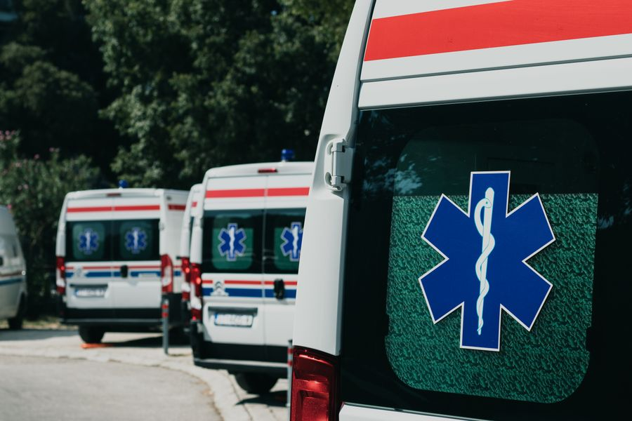
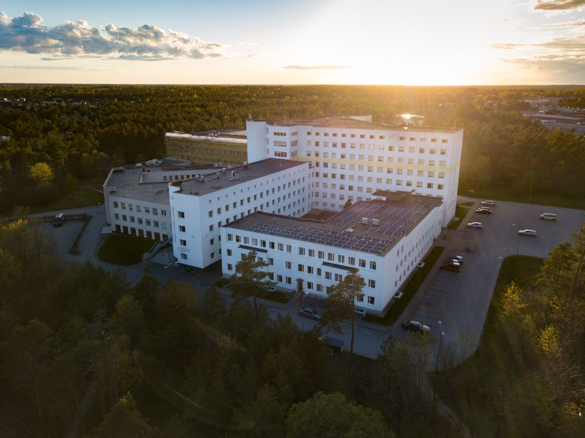

Cardiology
Cardiology
Dr. Arun Sekar
MBBS, MD, DM (Cardiology)Experience18 years
Vel Hospital is a 220-bed multi-speciality hospital on Trichy Main Road, Sundarapuram. Eighteen departments, a 24×7 emergency room, a modular theatre complex and an NABL-accredited lab — all on one campus, so a patient rarely has to be sent anywhere else.
A cardiologist, a nephrologist and an anaesthetist can be at the same bedside within minutes. These are the six departments patients ask for most — the full list runs to eighteen.

Echo, TMT, Holter and a single-plane cath lab running primary angioplasty round the clock.

A stroke pathway that gets a suspected case from the door to a CT report in under 20 minutes.

Joint replacement, arthroscopy and fracture care, with physiotherapy starting day one after surgery.

Two labour rooms, a dedicated obstetric theatre and a Level II nursery on the same floor.

Newborn to sixteen — immunisation, growth clinics and a twelve-cot neonatal unit.

Six triage bays, a resuscitation room and four ambulances, two of them advanced life support.
No hospital is judged by its lobby. It is judged by how quickly somebody answers at 3 a.m., and whether the bill matches the estimate.
Not on call from home — physically in the building. A duty physician, an anaesthetist and a radiographer are rostered for every night shift.
Before any planned admission you get a written package estimate. If the final bill will exceed it, someone tells you before the cost is incurred, not after.
Routine bloods, ECG and X-ray reports reach your phone the same day. The lab holds NABL accreditation and runs its own internal quality controls twice daily.
Every counter is staffed by someone who can explain a diagnosis in the language a family is comfortable in. Consent forms are available in Tamil.

Two physicians, one operating table and a borrowed ambulance. The building has grown seven times since.
Vel Hospital opened on Trichy Main Road in 2004 with thirty beds and a waiting room that doubled as the pharmacy. It grew the way most good hospitals in Tamil Nadu grow — one department at a time, funded by the last one, with the same handful of doctors staying on through each expansion.
Today the campus runs to 220 beds across five floors, but the working method has not changed much: the consultant who admits you is the consultant who discharges you, and the nursing station knows your family by the second day.
Full-time consultants, not visiting names on a board. Each one holds a fixed outpatient schedule you can book against.
Cardiology
 Obstetrics & Gynaecology
Obstetrics & Gynaecology
 Orthopaedics
Orthopaedics
 Neurology
Neurology
Fixed prices, no add-ons at the counter. All packages need an eight-hour fast and take about three hours end to end.
For anyone under 40 with no known condition.
The annual check most families over 40 choose.
For a family history of heart disease, or after 50.
Seven more packages — diabetic, women's wellness, senior citizen, pre-employment and others — are listed on the services page.
Collected from discharge feedback forms. Names shortened at the writer's request.
My father was brought in at 2 a.m. with chest pain. The angioplasty was done by 4. What I remember most is that somebody came out every twenty minutes to tell us what was happening.
Delivered here in March. The labour room staff were patient with me for eleven hours and never once made me feel rushed. Billing matched the estimate to the rupee.
Knee replacement at 68. Walking with a stick on day three, without one by the sixth week. Physiotherapy started the morning after surgery, which I did not expect.
Walk-in patients are seen at the outpatient department between 8:00 AM and 8:00 PM, Monday to Saturday. Booking a slot online or on +91 98430 21764 usually saves you about an hour of waiting, and it is the only way to be certain of seeing a particular consultant. The emergency department never needs an appointment.
Yes. Emergency and trauma is staffed round the clock, every day of the year including public holidays. A duty consultant, an anaesthetist and a radiographer are on the premises at all hours, and the ambulance line +91 98430 21799 is answered 24×7.
Vel Hospital is empanelled with 34 insurers and TPAs for cashless admission, and with the Chief Minister's Comprehensive Health Insurance Scheme. Bring your policy card and a photo ID to the insurance desk on the ground floor — pre-authorisation is usually cleared within a few hours for planned admissions, and in under an hour for emergencies.
The Vel Basic check is ₹1,450 and covers 42 parameters. The Comprehensive check, which is the one most people book, is ₹4,900 for 78 parameters including an ECG, ultrasound and a physician consultation. The Cardiac Care package is ₹7,200. All of them need an eight-hour fast and take about three hours.
Yes. Laboratory reports are sent to the mobile number registered at billing as a download link, usually the same evening for routine tests. Printed copies can be collected from the diagnostics counter for seven days after the test.
142, Trichy Main Road, Sundarapuram, Coimbatore 641024 — about 9 km from Coimbatore Junction and 15 km from the airport. There is free covered parking for roughly 90 cars in the basement, and a separate ambulance bay at the emergency entrance on the north side.
Tell us the department and a rough time, and the front desk will call you back to confirm the slot — usually within two working hours.